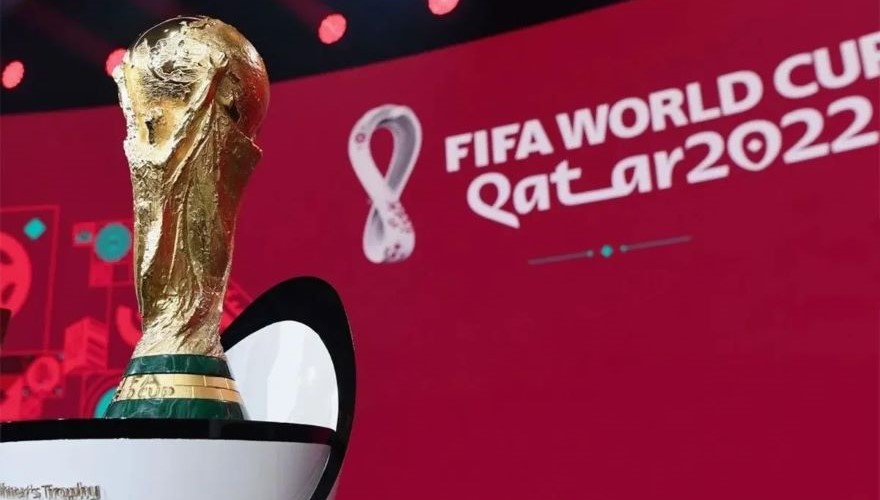
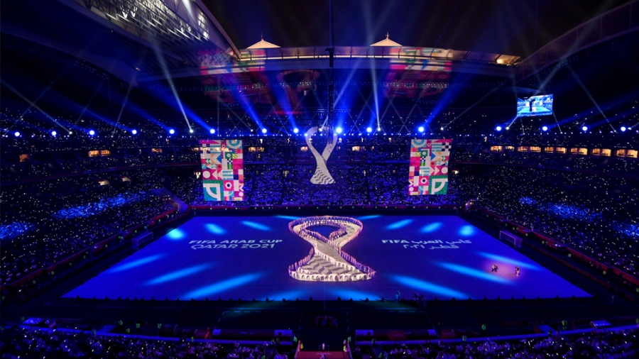
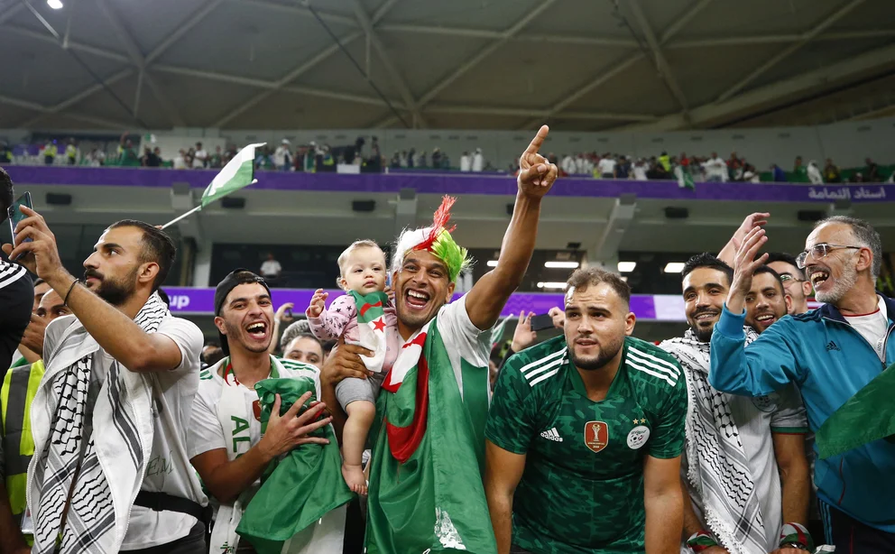

Fase de Grupos
Este paquete incluye
- Asistencia al viajero y seguro de cancelación para menores de 70 años
- Alojamiento en Doha con desayuno
- Entrada para los partidos de Argentina Vs. Polonia y Octavos, categoría 3
- Traslados al estadio en transporte público
- Traslados de entrada y salida al aeropuerto
- Atención personalizada en destino
- Recepción y bienvenida + Paquete de bienvenida
Octavos de final
Este paquete incluye
- Asistencia al viajero y seguro de cancelación para menores de 70 años
- Alojamiento en Doha con desayuno
- Entrada para los partidos de Argentina Vs. Polonia y Octavos, categoría 3
- Traslados al estadio en transporte público
- Traslados de entrada y salida al aeropuerto
- Atención personalizada en destino
- Recepción y bienvenida + Paquete de bienvenida


Cuartos de final